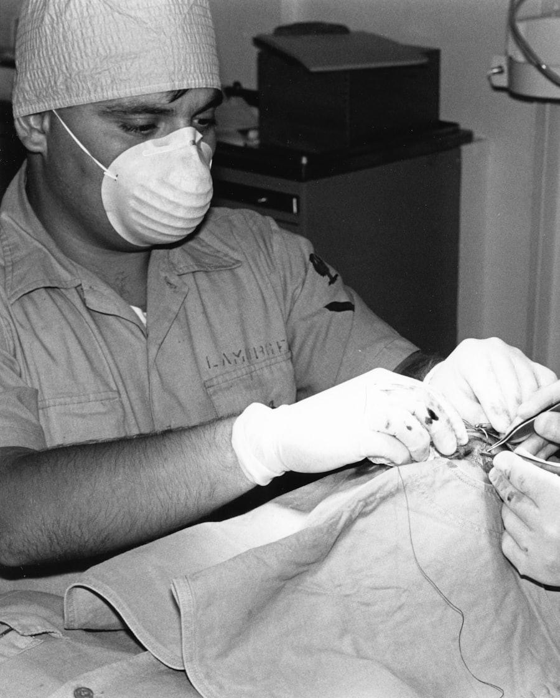

Valoración y planificación
Exploración, pruebas de imagen y analítica preanestésica. La cirugía se planifica entera antes de la primera incisión: abordaje, material, tiempos previstos y también la vuelta a casa.
Quirófano propio, instrumental esterilizado con control de cada ciclo y un cirujano responsable del caso de principio a fin.

Cómo lo hacemos
Exploración, pruebas de imagen y analítica preanestésica. La cirugía se planifica entera antes de la primera incisión: abordaje, material, tiempos previstos y también la vuelta a casa.
Antes de entrar a quirófano te damos el presupuesto cerrado, con lo que incluye y lo que no. Si durante la intervención apareciera algo que lo modifique, se te llama antes de continuar.
Zona quirúrgica independiente, con circuito limpio y material esterilizado en autoclave. Cada ciclo se controla y se registra: no basta con que el aparato se haya puesto en marcha.
Te vas con la pauta de analgesia, el cuidado de la herida, qué está permitido y qué no, señales de alarma y la fecha de revisión. Por escrito, porque nadie retiene eso en una conversación de cinco minutos.
Un bulto que crece, cambia de aspecto o sangra debe verse pronto. Muchas veces la punción con aguja fina permite orientar el diagnóstico en la propia consulta. Y cuando hay que extirpar, una masa pequeña se opera con márgenes cómodos y cierre sencillo; la misma masa seis meses después puede requerir una cirugía mucho mayor. La biopsia se envía siempre a laboratorio, aunque «tenga buena pinta».
El resultado depende tanto del quirófano como de las dos semanas siguientes. Lo que más se estropea en casa:
Herida enrojecida, caliente, hinchada o con secreción; puntos abiertos; sangrado; decaimiento marcado; fiebre; vómitos repetidos; o que deje de comer más de un día.
No esperes a la revisión programada si ves algo de esto. Llamar de más no molesta a nadie.
Preguntas
Depende de la especie, la raza y el tamaño; en razas grandes suele convenir esperar más. Es una decisión que se toma caso por caso, valorando ventajas e inconvenientes contigo.
Solo si aparece un hallazgo imprevisto, y en ese caso te llamamos antes de continuar, salvo que detenerse suponga un riesgo vital. Nunca te encontrarás una factura mayor sin haberlo hablado.
Depende del procedimiento. Muchas cirugías programadas se van a casa el mismo día, ya despiertas y con la analgesia puesta. Otras requieren ingreso, y te lo decimos de antemano.
Otros servicios
Una segunda opinión no ofende a nadie. Trae las pruebas que tengas y lo valoramos contigo sin compromiso.